CS184/284A Spring 2025 Homework 3 Write-Up
Link to webpage: https://cal-cs184-student.github.io/hw-webpages-amuthepotato/hw3/index.html Link to GitHub repository: https://github.com/cal-cs184-student/hw3-pathtracer-trueninegates#
Overview
In this project, we built a physically-based path tracer from scratch. We started by implementing ray generation and scene intersection tests for triangles and spheres, which form the foundation of the renderer. We then used a Bounding Volume Hierarchy, which reduced rendering times by several orders of magnitude for complex scenes. With fast intersection in place, we implemented direct illumination using both uniform hemisphere sampling and importance sampling, the latter of which reduced noise in soft shadows by directing rays toward light sources. We then extended the renderer to support full global illumination with multi-bounce indirect lighting and Russian Roulette termination, enabling realistic effects like color bleeding from walls onto surfaces. Finally, we implemented adaptive sampling, which concentrates samples in difficult parts of the image and stops early for pixels that have already converged, producing noise-free images more efficiently than uniform sampling.
The most interesting thing we learned from this project is how much physical realism comes from indirect lighting. The jump from direct-only illumination to full global illumination was very interesting to see. It was also surprising how much the choice of sampling strategy matters.
Part 1: Ray Generation and Scene Intersection
Task 1: Generating Camera Rays
In the first part of the rendering pipeline, rays are generated from the camera through each pixel in the image. To do so, we first look at the image space and transform a coordinate (x, y) to camera space. Since the origins are different in camera and image space, we also had to account for that. The image's center is at (0.5, 0.5) while in camera space, it is at (0, 0, -1). The bottom left corner for image space is at (0, 0) while for camera space, the bottom left corner is at(-tan(hFov/2), -tan(vFov/2), -1). The top right corner in image space is (1, 1)
while in camera space, it's at (tan(hFov/2), tan(vFov/2), -1). To align these, we compute the camera-space coordinates for each pixel
by normalizing the pixel coordinates and offsetting them relative to the center. Once the camera-space position is computed,
we construct a primary ray originating from the camera and passing thruogh the pixel location on the image plane. This ray serves
as the starting point for all subsequent intersection calculations.
Task 2: Generating Pixel Samples
After generating rays for each pixel, the next step is to compute the color of the pixel by estimating the incoming radiance. Since a single ray can't capture all of the light contributions, we use Monte Carlo sampling to approximate the integral of radiance over the pixel. For each pixel, we generate multiple rays with slight offsets within the pixel using a uniform grid sampler. Each ray is then traced through the scene by callingest_radiance_global_illumination, which
currently returns a debug shading value. The results of all rays are averaged to compute the final color of the pixel,
which is then stored in the sample buffer. This approach helps reduce aliasing and produces smoother images,
especially along edges and areas with fine detail.

Task 3: Ray-Triangle Intersection
The triangle intersection task involves detecting whether a ray intersects a triangle in the scene, and, if so, computing the intersection details. We implemented the Möller-Trumbore algorithm, which uses barycentric coordinates. First, we compute two edge vectors of the triangle and then the vector h as the cross product of the ray direction and one edge. The determinant is the dot product of the other edge with h. If the determinant is near zero, that means the ray is parallel to the triangle and there is no intersection. Otherwise, we computed the inverse of the determinant and the vector from the triangle vertex to the origin. Using these, we calculate the barycentric coordinates u and v. If both u and v are between 0 and 1 and their sum doesn't exceed 1, the intersection lies inside the triangle. Finally, we compute t along the ray direction, which tells you how far along the ray you are from the origin. For the function intersect, we also updated the Intersection structure with the interpolated surface normal using the barycentric weights, the primitive pointer, and its BSDF.Ray-Sphere Intersection
For spheres, the intersection test is derived analytically from the quadratic equation of the sphere surface. We represent the sphere with a center o, and radius r, and the ray asr(t) = origin + t * direction. Substituting the ray
into the sphere equation (p - o)^2 = r^2 gives a quadratic in t. Solving this yields two roots corresponding to the entry and exit points of the ray
with the sphere. We choose the closest positive t that falls within the ray's min_t and max_t. For the function intersect,
we compute the intersection point using the t we choose and determine the surface normal analytically by normalizing the vector from the sphere center to
the hit point. This normal, along with the primitive and its BSDF, is stored in the Intersection structure.


Part 2: Bounding Volume Hierarchy
Task 1: Constructing the BVH
In this task, we implemented the recursive BVH construction algorithm. The first step was computing a bounding box that enclosed all primitives within the current range. This was done by iterating through the primitives between the start and end iterators and expanding the bounding box using each primitive's bounding box. After the bounding box was done being computed, a new BVHNode was created to represent it. Next, we checked the number of primitives in the current range. If the number of primitives was less than or equal to the specifiedmax_leaf_size, the node was designated as a leaf node. In this case, the node stored the start and end iterators and did't create
any child nodes. If the number of primitives exceeded the maximum leaf size, the primitives were split into two groups to form
the left and right subtrees. To determine the splitting axis, we looked at the extent of the bounding box, which is the total space an object occupies and is
defined by the minimum and maximum coordinates. We then selected the axis with the largest dimension (so the axis along which the bounding box
is the longest). Then, we computed a splitting point along the chosen axis
by averaging the centroids of all primitive bounding boxes on that axis. Each primitive's bounding box centroid was projected onto the chosen axis, and the mean of these values
was used as the split coordinate. Primitives whose centroids fell below this value were placed in the left child node, while
the rest were placed in the right node. If all primitives ended up on one side of the split, we handled this edge case by
splitting the range in half to avoid infinite recursion. The function then
recursively constructed the left and right child nodes until all nodes satisfied the leaf size condition.
Task 2: Intersecting the Bounding Box
We implemented the ray-bounding box intersection test in this task. The method determines whether a ray intersects an axis-aligned bounding box by computing intersection intervals along each axis independently. For each axis, we calcualted the parameter values where the ray intersects the two planes defining that axis of the box. These values were computed using the optimized ray-plane intersection formula given in class, which takes advantage of axis alignemnt to reduce the number of operations. For example,t1 = (min.x (or max.x) - origin) / the direction of the ray.
The entry value would be the smaller one and the exit value would be the
larger one. After computing the entry and exit intersection
values for each axis, we updated the valid interval of the ray by taking the maximum of the entry values
and the minimum of the exit value across all three axes. If the resulting interval was empty (as in entry value > exit value), the ray doesn't
intersect the bounding box and the function returns false. Otherwise, the ray intersects the box within the valid interval and the
updated intersection range is returned through the t0 and t1 parameters.
Task 3: Intersecting the BVH
We implemented recursive traversal of the BVH in this task. The traversal begins by checking whether the ray intersects the bounding box of the current node using the bounding box intersection function from Task 2. If the ray does not intersect the node's bounding box, the traversal can safely terminate early because none of the primitives contained in that node can be hit. If the node is a leaf node, the algorithm directly tests the ray against each primitive stored in that node. Inhas_intersection, the function returns immediately once a primitive intersection is found. In intersect, we check all
primitives within the node and update the intersection record accordingly. If the node is not a leaf node,
the algorithm recursively traverses both the left and right child nodes. Any intersections found in the child nodes are compared,
and the nearest intersection along the ray is returned. This recursive traversal allows the algorithm to efficiently
discard large portions of the scene that are guaranteed to not intersect with the ray.


Part 3: Direct Illumination
Task 1: Diffuse BSDF
In this task, we implemented the Lambertian diffuse BRDF. A diffuse surface reflects light equally in all directions over the hemisphere, so the BRDF evaluates to the surface reflectance divided by pi. Thesample_f function samples an incoming light direction on the hemisphere and returns the BRDF evaluation for that
sample direction.
Task 2: Zero-bounce illumination
We implemented thezero_bounce_radiance function to return the emission of the surface intersected by the ray. This
represents light that reaches the camera directly from a light source without bouncing off any other surfaces. The
emission is obtained from the surface's BSDF using the get_emission() functin. After implementing this function, we
updated est_radiance_global_illumination to return the zero-bounce radianec instead of the debug normal shading.
Task 3: Direct Lighting with Uniform Hemisphere Sampling
The goal in this task was to estimate direct illumination on a surface point by sampling directions uniformly over the hemisphere above the surface. We use the Monte Carlo approximation of the rendering equation given in class, which is the integral of the BSDF multiplied by the incoming radiance, multiplied by the angle between the surface normal and the sample incoming direction. First we create a local coordinate system where the surface normal points along the z-axis. Then, for a set number of samples, we randomly generate directions on the hemisphere usinghemisphereSampler->get_sample(). Each sampled direction wi is converted
into world space (wi_world) and a shadow ray is cast from the surface point toward that direction.
If the shadow ray hits a light, we retrieve the emitted radiance Li from that light and compute the contribution
using the formula L = f(wo, wi) * Li * cos(thetai) / p(wi). Here, p(wi) is the probability
density function of the uniform hemisphere sample (1/2pi). After looping over all samples, we divided by the number
of samples to get the Monte Carlo estimate of direct lighting. This method works
universally, but tends to produce noisy results, especially with few samples, because most directions do not hit a light directly.
Task 4: Direct Lighting by Importance Sampling Lights
This task improves the efficiencvy and reduces noise by using importance sampling of the lights themselves. Instead of sampling the entire hemisphere blindly, we only sample directions that actually points to lights. We use the same equation from Task 3, but now our probability density function is tailored to the lights. We loop over every light in the scene and sample a directionwi pointing toward the light,
get the distance to the light, and the corresponding PDF. Then, we check whether the surface normal faces the light by using a dot product and cast
a shadow ray limited to the distance of the light to see if anything blocks it. If the shadow ray doesn't intersect anything, we
compute the Lambertian reflection f(w_out, w2o * wi) and multiply by the incoming radiance, the cosine factor, and divide by
the PDF of sampling that direction. By sampling only the directions that actually carry light, this method produces much smoother soft shadows with
far fewer rays compared to uniform hemisphere sampling.
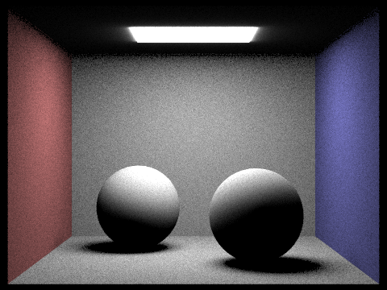
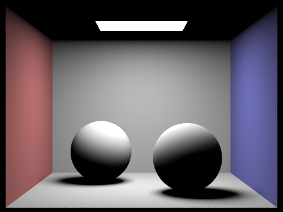
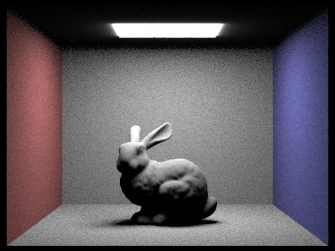
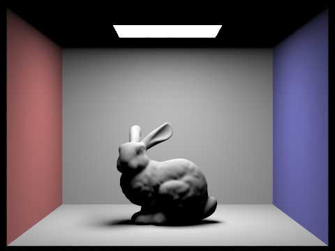
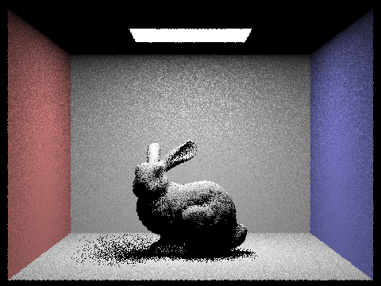
Part 4: Global Illumination
To implement indirect lighting, we implemented at_least_one_bounce_radiance() and updated est_radiance_global_illumination(). The global illumination function first adds zero_bounce_radiance() (light emitted directly from light sources) when isAccumBounces is true or max_ray_depth == 0, then adds at_least_one_bounce_radiance() for any depth greater than 0.
The main indirect lighting function works as follows. We first compute one_bounce_radiance() to get direct lighting at the current hit point. If the ray depth is 1 or less, we return just that direct lighting since we've hit our bounce limit. Otherwise, we sample a new incoming direction using isect.bsdf->sample_f(), which gives us a direction w_in, its pdf, and the BSDF value f. We convert w_in to world space and cast a new ray from the hit point. For the first indirect bounce (when r.depth == max_ray_depth), we always trace it to ensure at least one indirect bounce. For subsequent bounces, we apply Russian Roulette with a continuation probability of 0.6, which means we terminate with 40% probability at each additional bounce. When we do continue, we divide by the continuation probability to keep the estimator unbiased. If we want to turn off the Russian Roulette feature, we set the continuation probability to 1.0 and use max_ray_depth to end the recursion. The indirect contribution is weighted by the BSDF value, the cosine term w_in.z, and divided by the pdf. Finally, we return either the sum of direct and indirect (when isAccumBounces=true) or just the indirect contribution alone.
Below are renderings of wall-e.dae and CBspheres_lambertian.dae with full global illumination using 1024 samples per pixel, 4 samples per area light, and max ray depth of 5. Notice the soft color bleeding from the red and blue walls onto the spheres and floor.
|
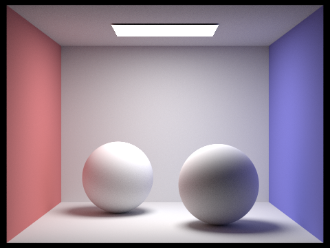 |
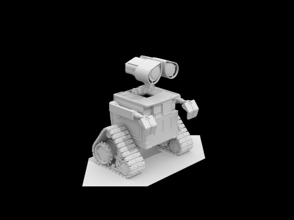 |
Below we compare direct illumination only (left), and indirect illumination only (right) for CBbunny.dae, using 1024 samples per pixel.
|
|
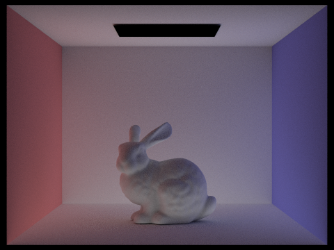 |
With only direct illumination, the ceiling is black since no direct light rays reach it, and the underside of the bunny is dark. With only indirect illumination, the light source itself goes dark since that is zero-bounce light, but the ceiling and underside of the bunny are now lit by light that has bounced off other surfaces.
Below we show the mth bounce of light only (isAccumBounces=false) for CBbunny.dae at max_ray_depth 0 through 5, using 1024 samples per pixel.
|
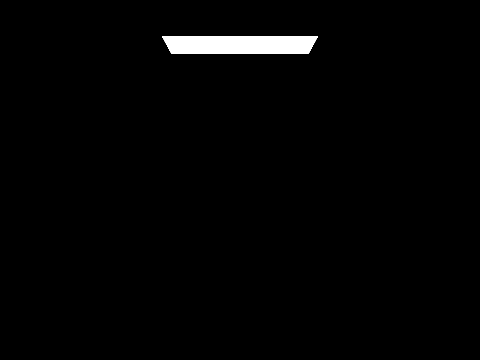 |
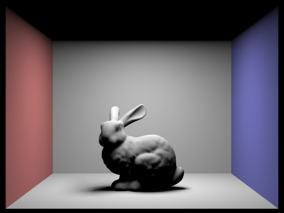 |
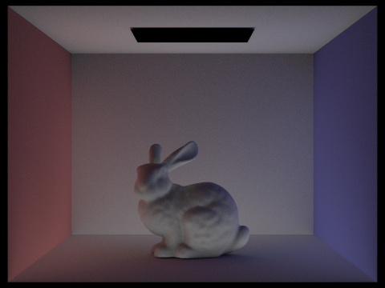 |
|
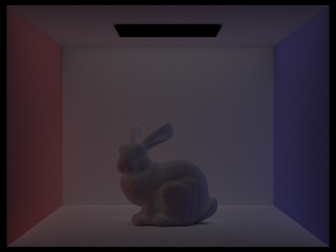 |
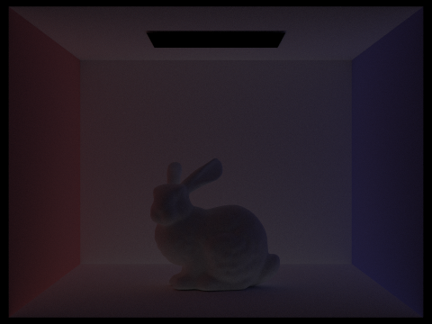 |
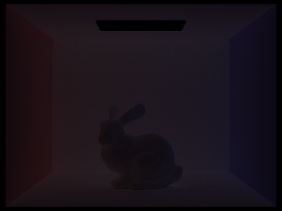 |
The 2nd bounce captures light that has reflected twice. This is what illuminates the ceiling and the underside of the bunny, areas that direct light never reaches. The 3rd bounce fills in even softer, more diffuse lighting throughout the scene, particularly adding subtle color bleeding from the walls. These indirect bounces are what make path tracing look so much more realistic than rasterization, which can only approximate indirect lighting.
Below we compare accumulated bounces (isAccumBounces=true) for the same depth settings.
|
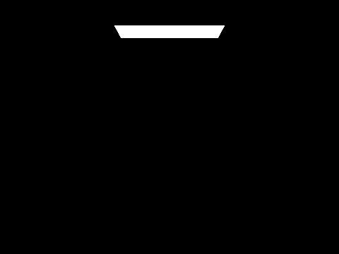 |
|
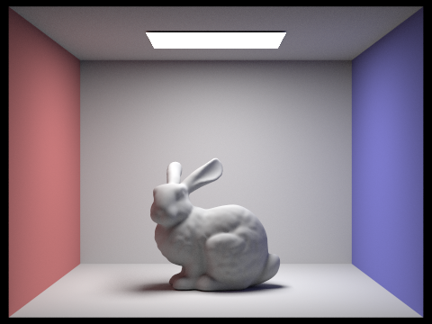 |
|
|
|
|
Russian Roulette provides an unbiased way to terminate paths randomly. Rather than always cutting off at a fixed max_ray_depth, which would bias the estimate by giving no probability to longer paths, Russian Roulette terminates each bounce with some probability and compensates by dividing the contribution of surviving paths by the continuation probability of 0.6. This keeps the estimator unbiased in expectation while still being computationally tractable. Below are Russian Roulette renderings of CBbunny.dae with max_ray_depth set to 0, 1, 2, 3, 4, and 100, using 1024 samples per pixel.
|
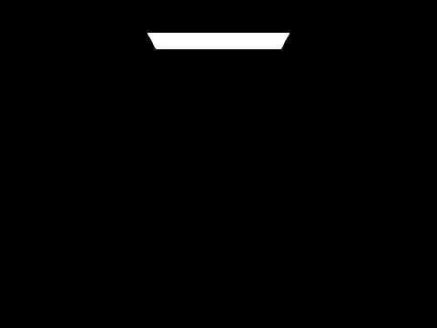 |
|
|
|
|
|
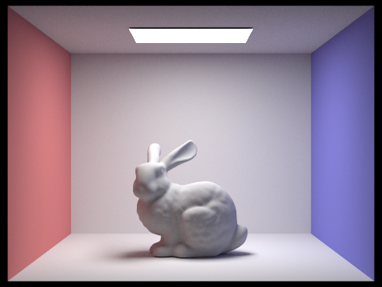 |
Below we compare sample-per-pixel rates for CBspheres_lambertian.dae, using 4 light rays and max ray depth of 5.
|
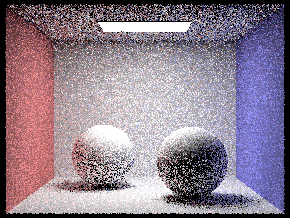 |
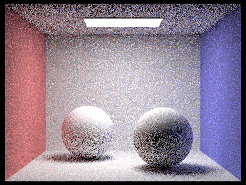 |
|
|
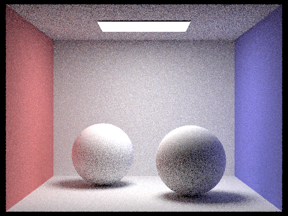 |
|
|
|
|
||
As expected, noise decreases significantly as we increase samples per pixel. At 1 sample per pixel the image is extremely noisy, while at 1024 samples per pixel the result is smooth and clean. The improvement is most dramatic in the lower sample counts as going from 1 to 16 samples makes a large visible difference, while the jump from 16 to 64 is more subtle.
Part 5: Adaptive Sampling
Adaptive sampling avoids using a fixed high number of samples per pixel by concentrating samples in the more difficult parts of the image. Some pixels converge quickly with low sampling rates while others, such as those near shadow boundaries or with complex indirect lighting, require many more samples to eliminate noise.
The algorithm works by tracking two running sums for each pixel: s1 and s2, where s1 is the sum of all sample illuminances and s2 is the sum of all squared sample illuminances, with each sample's illuminance computed via L.illum(). Every samplesPerBatch samples, we compute the mean and variance from s1 and s2, and use them to compute the convergence measure I = 1.96 times the square root of (variance / n). This value I represents a 95% confidence interval half-width for the pixel's average illuminance. If I is less than or equal to maxTolerance times the mean, where maxTolerance = 0.05 by default, we consider the pixel converged and stop tracing additional rays.
In our implementation inside raytrace_pixel(), we loop in batches of samplesPerBatch samples, and call est_radiance_global_illumination() to get the radiance L. We accumulate L into radiance for the final pixel color, and accumulate L.illum() into s1 and s1² into s2 for the statistics. After each full batch, we check convergence. The final pixel color is computed by dividing the accumulated radiance by total_samples, and we store total_samples in sampleCountBuffer to generate the rate image.
Below are renderings of CBbunny.dae and CBspheres_lambertian.dae with 2048 samples per pixel, 1 sample per area light, and a max ray depth of 5, along with their sampling rate images. Red represents pixels that required the maximum number of samples, while blue represents pixels that converged quickly.
|
|
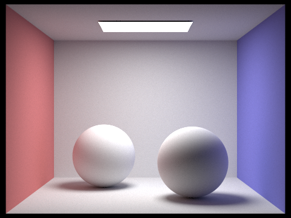 |
|
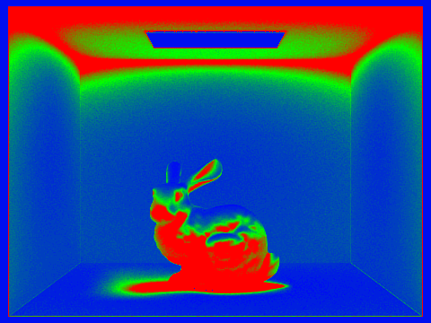 |
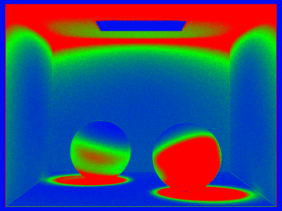 |
The rate images show that flat uniformly lit areas like the back wall converge quickly (blue/green), while complex areas like the bunny's surface, the spheres, and regions near shadow boundaries require many more samples (red). This matches what we expected as pixels with high variance in their incoming radiance take longer to produce a stable estimate, while simple uniform regions stabilize more quickly.